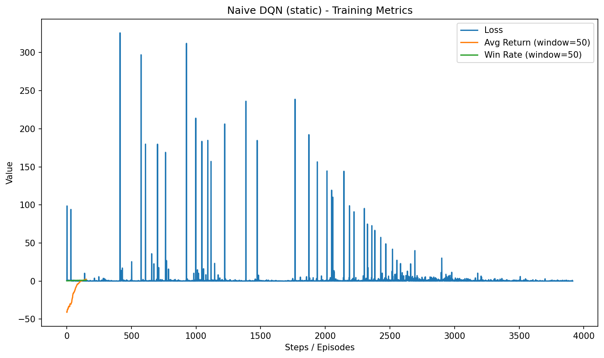
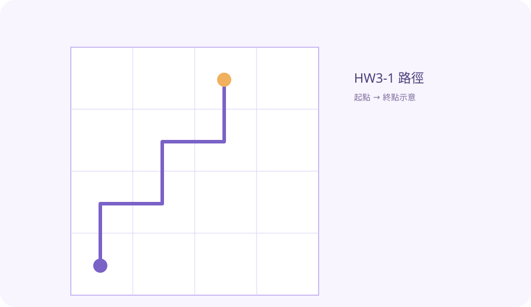
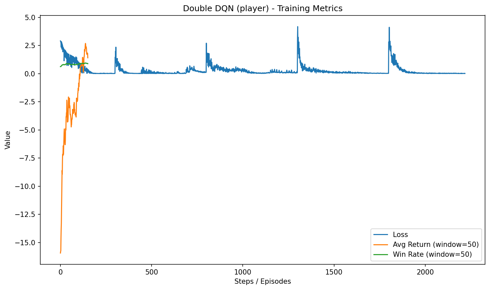
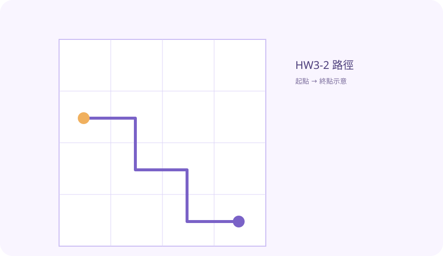
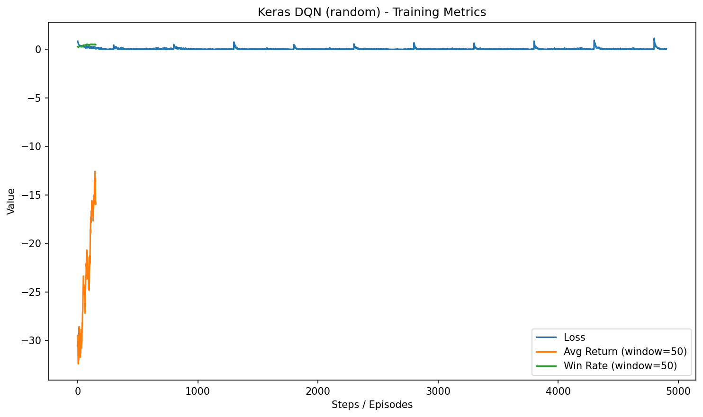
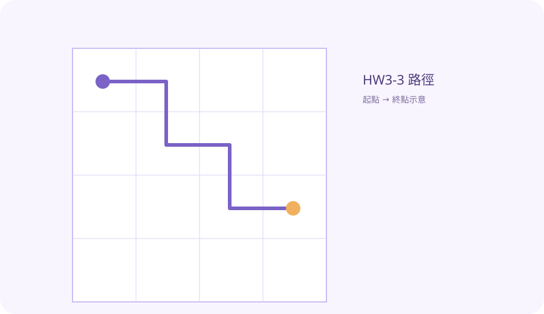
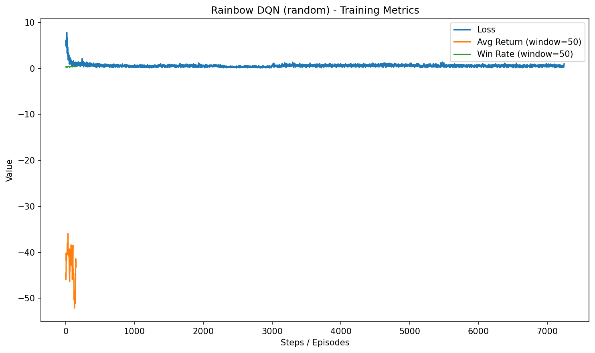
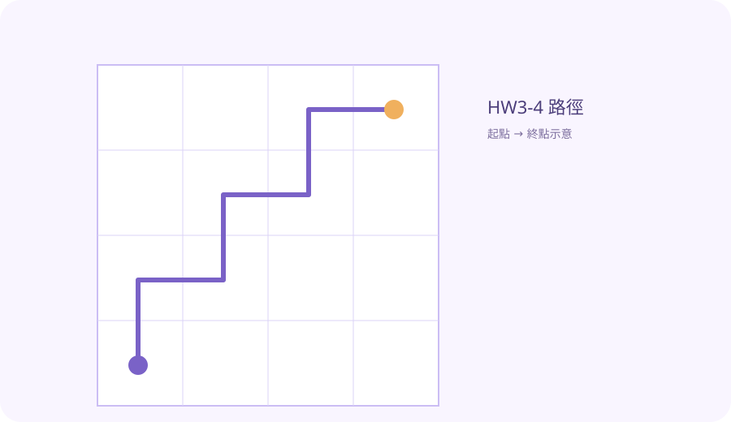

HW3-1：Naive / Replay DQN
Static + Random特色：基礎 DQN 與 Experience Replay，展示最基本的 Q-learning 收斂行為。
訓練設定：4x4，epochs=200；勝率：100.00%（static，100 episodes）


HW3-2：Double / Dueling DQN
Player Mode特色：Double 減少高估偏差、Dueling 分離狀態價值與動作優勢。
訓練設定：4x4，epochs=200；勝率：70.00%（player，100 episodes）


HW3-3：Keras DQN
Random Mode特色：Keras 版 DQN，搭配 Huber loss、梯度裁剪與學習率排程。
訓練設定：4x4，epochs=200；勝率：23.00%（random，100 episodes）


HW3-4：Rainbow DQN
Random Mode特色：Double + Dueling + PER + n-step + NoisyNet
訓練設定：4x4，epochs=200；勝率：15.00%（random，100 episodes）

